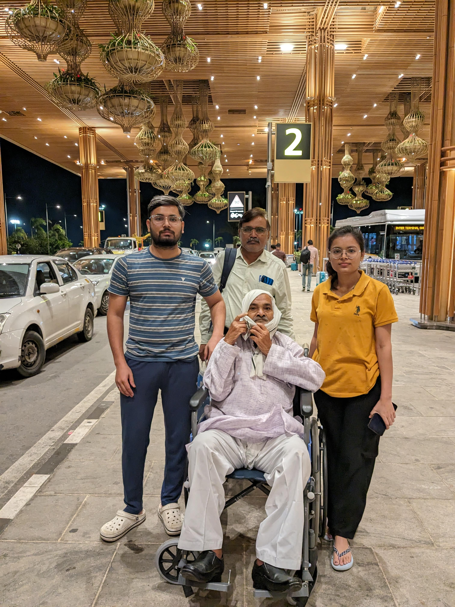

Never before, this month of August 2024, had I given importance to a soul's departure. The emotion was that of indifference. A straight faced response of "So what". So what if they died. It's the natural order of life. One of the pre-requisites to life, is the fate of an end.
This was, until I lost someone close. Someone, I loved, respected and adored. My grandfather, one of the rare men that my heart has deep respect for. I never could fathom the pain, his departure broght. Although the pain was extreme, I had experienced it before in a different shade of black. It wasn't that of a death but a loss, nonetheless.
My grandfather, Mahipat Singh Patel, teacher, a man of few words and a strong character, left us in the morning of August 4th, 2024. His departure was painless, yet the journey to that point was filled with suffering. My heart breaks when I think about his last few weeks, yet I am thankful that he didn't suffer more. Dadaji, you are in a better place, I just miss your presence in my life. I already miss, just existing alongside you.
We spoke rarely, more rare were our meaningful conversations. You didn't express yourself, as much as I would want to understand you. You were quiet and quite consistent. A simple man, who realised the truth of his life. You tried to fulfill our wishes, without having any expectation.
You sat outside our home and watched people passing by. Some would wish you the time of day, others just pass and still others touch your feet. You would notice them passing by, responding to their wishes in return. After a while, you would return back to your thoughts. I miss these ordinary events of our lives.
I only have one regret. You never depended on anyone all your life. In the last 3 months, you completely gave off responsibility of your life to us, me in particular. I failed at that. I am sorry. You didn't deserve to go this soon. I miss you
You did more than your duties. You gave more than you had. You cared more than what was asked of you. I promise to follow your footsteps.

ॐ शांति! ॐ शांति! ॐ शांति!
Published: 2024-08-10
Tagged: family